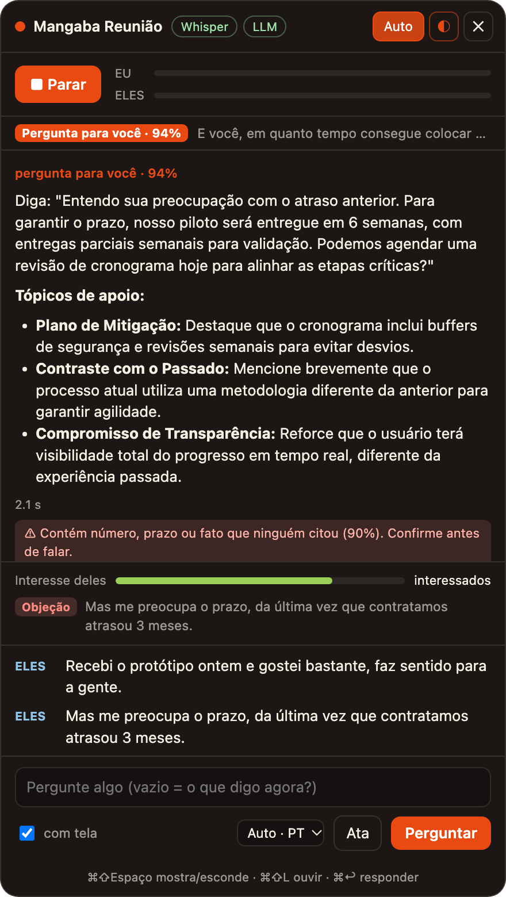

Transcribes you and the other participants, notices when a question is for you and shows what to say within 1 to 2 seconds.

Real app screen, with real model answers.
Captures your microphone and the meeting sound separately, with no driver or admin password, and transcribes on your own computer, on macOS, Windows or Linux.
When someone asks a question, the answer is already there. A rhetorical question, or one for someone else, triggers nothing.
Flags commitments (and whether you or they own them), decisions and objections, and gauges the other side's interest. Everything goes into the minutes.
If a suggestion contains a number, deadline or fact nobody mentioned in the conversation, a warning asks you to confirm.
In an interview in Portuguese, the ready-to-say sentence comes out in Portuguese so you can speak it directly; supporting points stay in English.
A small, always-on-top window that does not show when you share your screen on macOS and Windows. Shortcuts to listen, ask and hide.
What decides whether an utterance is for you, what counts as a commitment and what is invention is Brier, Mangaba's decision model. It gives a calibrated probability, and each threshold was chosen on labeled utterances so it does not raise false alarms.
| Question to Brier | Brier score | Result |
|---|---|---|
| Is the question for you? (Portuguese) | 0.048 | 12/15, 0 false alarms |
| Is the question for you? (English and Spanish) | 0.078 | 5/7, 0 false alarms |
| Is it a commitment? Who owns it? | 0.068 | 6/6, 0 false alarms |
| Is it a decision? | 0.122 | 4/4, 0 false alarms |
| Is it an objection? | 0.056 | 4/4, 0 false alarms |
| Did the suggestion invent data? | 0.044 | 5/5, 0 false alarms |
Brier score: lower is better. Evaluated on Nov 7 and 8, 2026 with 20 to 30 cases per question; the numbers will be reviewed with real meetings.
Audio never leaves the machine. The transcript and session are saved locally.
Text goes to Mangaba's models in a datacenter in Brazil, with no international transfer, in line with Brazil's LGPD.
Transcribing a conversation involves other people's voices. Let participants know the meeting is being transcribed.